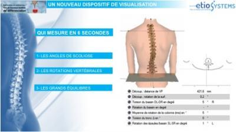

Solution d’Imagerie Non Irradiante
Vous souffrez du dos et aucun traitement ne vous a totalement satisfait ?
Nous pouvons vous aider à déterminer la ou les causes afin de mettre en place le traitement le plus juste. Cet examen a pour objectif d'aider vos différents thérapeutes dans la prise en charge de vos douleurs en leurs fournissant des éléments d'analyses indispensable.
Grâce à cet examen nous allons disposer d'informations très précises sur :
- Votre Posture Moyenne
Celle ci permet de connaitre l’équilibre de votre colonne vertébrale, l’orientation des épaules et du bassin.
Les courbures de votre colonne dans les 3 plans de l’espace.
De diagnostiquer une éventuelle scoliose.
Et la répartition de charge de vos pieds au sol.
- Les Oscillations.
Tout corps est en mouvement, il existe des oscillations d’avant en arrière.
Sur 30 secondes nous pourrons visualiser la manière dont vous vous équilibrez.
Lorsque notre système postural se dérègle, notre organisme va élaborer une stratégie de rééquilibration qui, bien qu'efficace, ne sera pas optimale et risquera d'engendrer de la fatigue et des douleurs.
Avec l'ETIOLOAB 4D nous sommes capable de mesurer ces adaptations au 1/10° de millimètre et au 1/10° de degré. C'est l'analysesystématique de toutes ces adaptations qui nous permet de mettre en évidence les capteurs défaillants et parmis eux, celui qui en est la cause principale.
Présentation de notre examen
Notre examen va se dérouler en 4 phases:
1 - Prise de Rendez-vous :
Vous choisirez le créneau qui vous convient le mieux et nous aurons besoin d'un minimum d'informations :
- Nom et Prénom
- Adresse Mail
- Numéro de téléphone ( de préférence mobile)
2 - Connexion à Etiocloud, votre espace personnel
Si vous disposez d'une adresse mail, un lien de connexion à votre espace personnel vous parvient et vous permet, à l'aide d'un code personnel à usage unique, de créer votre dossier et de compléter votre historique médical
3 - Jour de l'examen
Le jour de l'examen, présentez vous avec vos examens complémentaires (radios, scanners, IRM...). Les informations que vous aurez saisie sur etiocloud seront automatiquement portées à la connaissance de votre examinateur.
Puis à l'aide de notre unité d'imagerie NON IRRADIANTE, nous allons projeter de simples rayons de lumières sur votre dos nu afind'obtenir une reconstruction 3D de votre colonne, ainsi que de nombreuses et précieuse données pour la suite de l'examen.
Nous procéderons ensuite à un rapide examen clinique, nous vous présenterons et vous expliquerons tous les résultats de votre analyse.
4 - Réalisation et mise à disposition de votre dossier
Dans les minutes qui suivent l'examen, vous disposerez de votre EtioBOOK personnel accessible par internet via un PC, une tablette ou un Smartphone.
Si vous ne disposez pas d'un accès internet vous repartirez avec votre dossier imprimé.